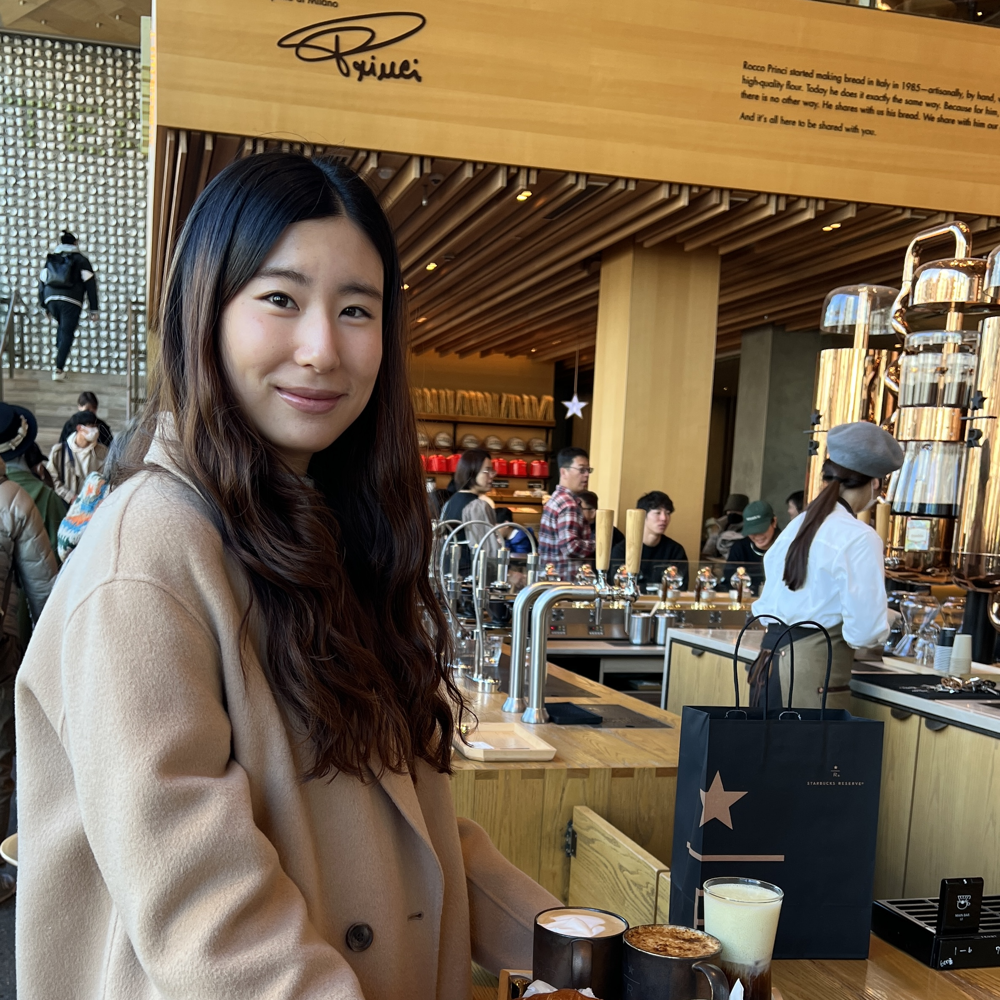

About Us
Wellness Explorers is founded and developed by Elaine, Michelle and Jenny – three medical students from McMaster University.
Elaine Ho
Elaine Ho is a second year MD student at McMaster. Before medical school she was a science and math tutor for kids through elementary, middle and high school, where she found her love of teaching all ages. Her favourite trail in Hamilton is Cootes Paradise near McMaster.
Michelle Kan-Hodgson
Michelle Kan-Hodgson is a second year medical student at McMaster. She has an interest in paediatrics and preventative medicine. Her favourite trail in Hamilton is Iroquoia Heights.
